Brasil
OBR
Olimpíada Brasileira de Robótica: aproxima estudantes da programação, da robótica e do pensamento científico por meio de desafios que estimulam a resolução de problemas no ambiente escolar.
A EZodium é uma equipe de robótica de Barra do Piraí/RJ, formada por jovens estudantes de diversas idades e diferentes realidades sociais, unidos pelo propósito de participar das principais competições nacionais e internacionais de robótica que integram educação tecnológica e valores esportivos.
As competições de robótica são muito mais do que torneios: são jornadas de formação capazes de marcar a vida dos jovens.
Durante a preparação, os estudantes enfrentam desafios reais, defendem suas ideias, convivem em equipe, lidam com pressão, celebram conquistas e transformam dificuldades em aprendizado.
Esse tipo de vivência já está presente em programas educacionais de diversas escolas e instituições ao redor do mundo, aproximando os jovens da ciência, da tecnologia, da criatividade, da inovação e das competências essenciais para o futuro.
Esses torneios e programas representam parte do universo que inspira a EZodium: ambientes onde a aprendizagem acontece na prática, com desafio, criatividade, cooperação e espírito esportivo.
Olimpíada Brasileira de Robótica: aproxima estudantes da programação, da robótica e do pensamento científico por meio de desafios que estimulam a resolução de problemas no ambiente escolar.
Torneio Brasil de Robótica: promove uma vivência educacional em equipe, integrando tecnologia, criatividade, pesquisa, apresentação de ideias e resolução de desafios com espírito colaborativo.
Federação Internacional de Robótica e Automação: conecta estudantes a desafios de robótica, engenharia, programação e performance tecnológica em um ambiente competitivo de alcance internacional.
Programa internacional que combina robótica, colaboração, mentoria, inovação e valores do trabalho em equipe, incentivando os jovens a desenvolverem soluções, liderança e espírito de cooperação.
RoboCore Experience: evento que valoriza engenharia aplicada, combate de robôs, estratégia, segurança, criatividade técnica e melhoria contínua dentro e fora da arena.
Programa internacional que incentiva meninas a criarem soluções tecnológicas com impacto social, fortalecendo protagonismo feminino, liderança, empreendedorismo e inovação.
Mais do que competir, a EZodium transforma jovens por meio da tecnologia, do esporte e da educação, fortalecendo sua confiança e preparando-os para o futuro.
Confiança, resiliência e foco que vão além da robótica.
Portfólio, repertório técnico e experiências valorizadas em trajetórias educacionais.
Liderança, colaboração, organização e comunicação aplicadas em desafios reais.
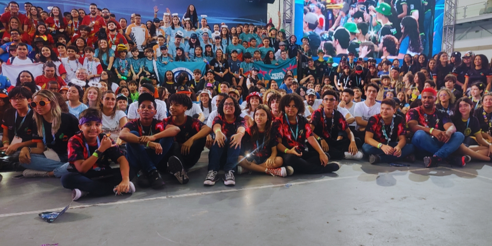
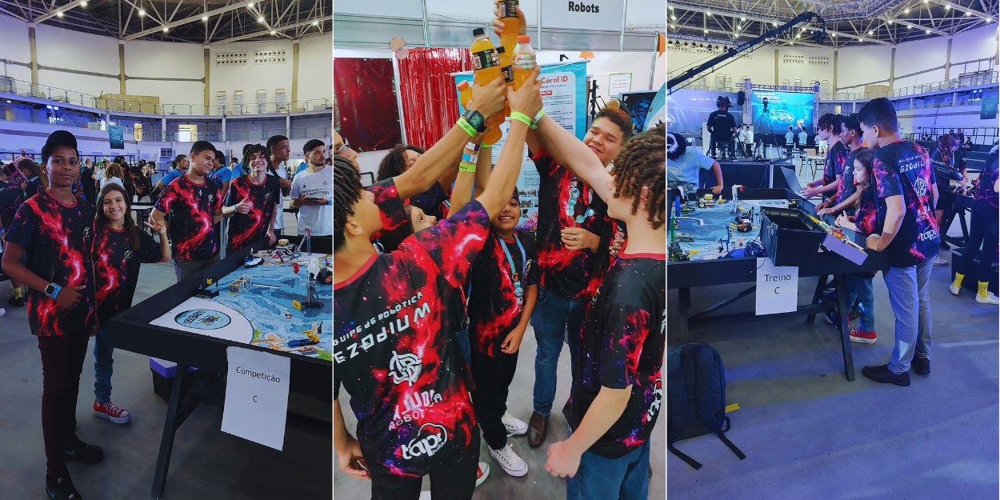
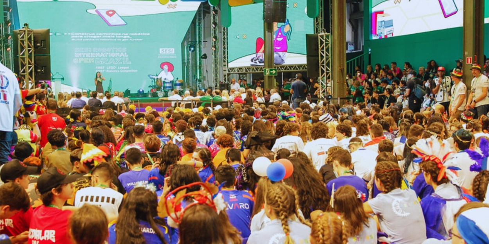
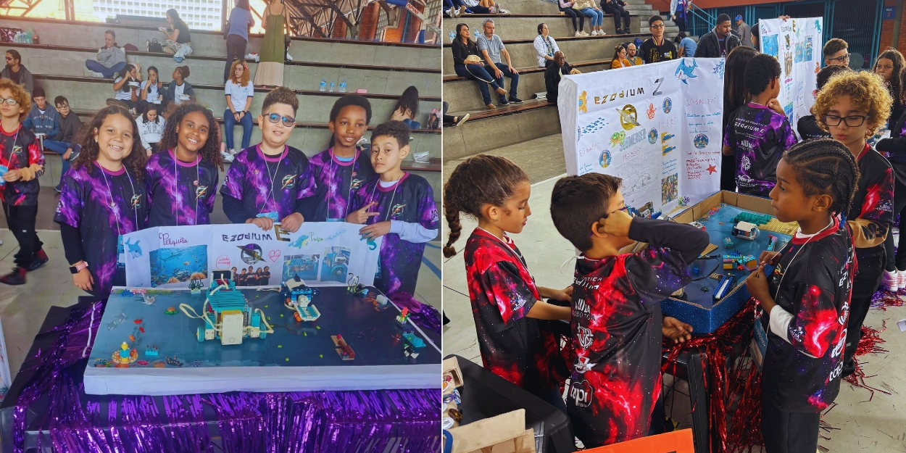
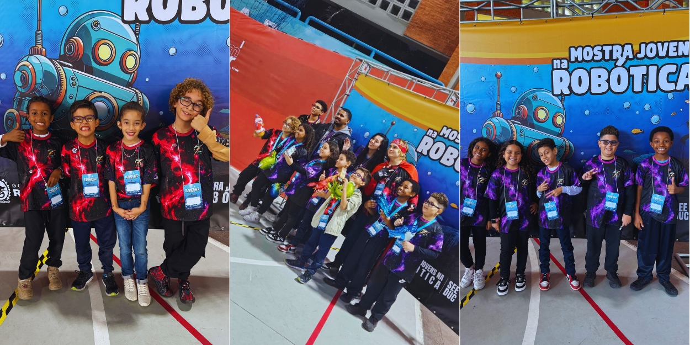
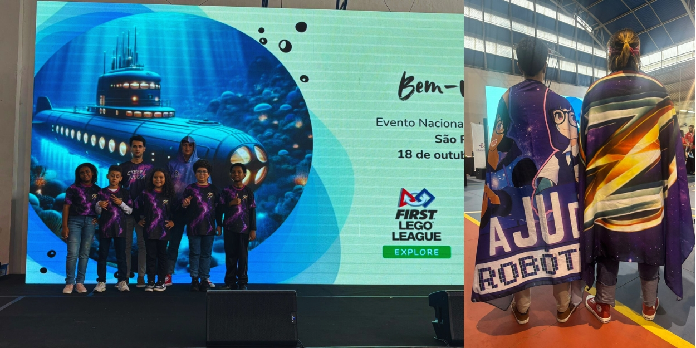
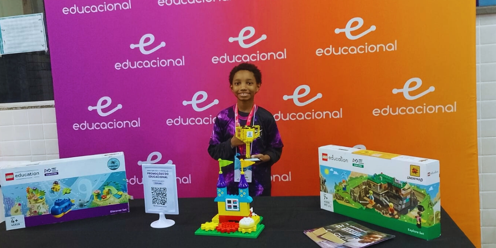
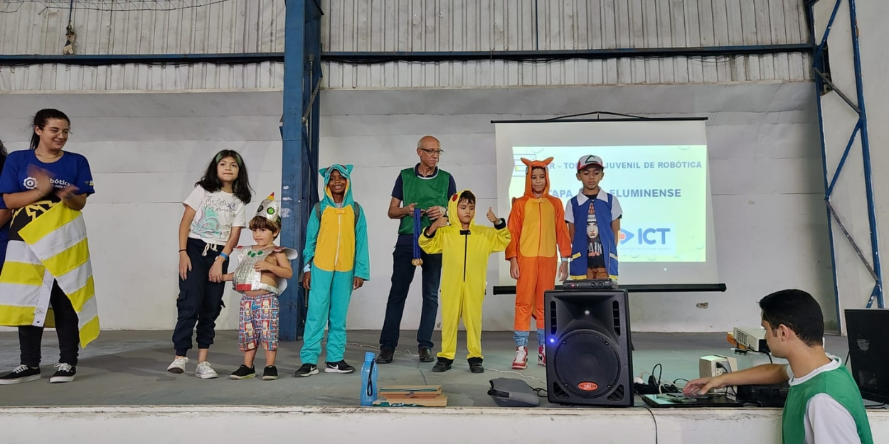
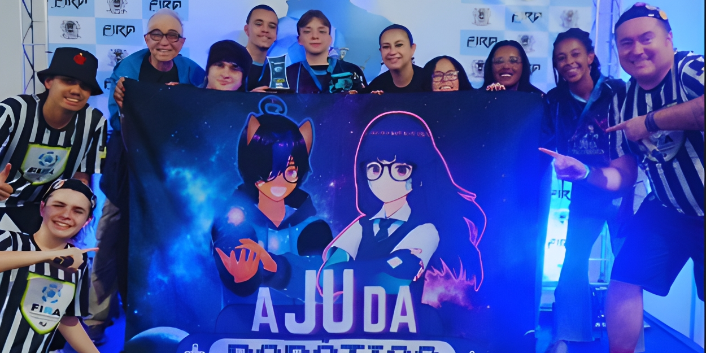
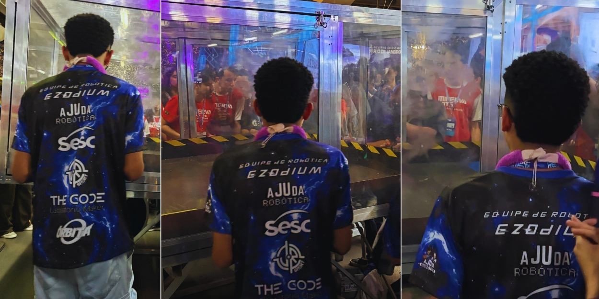
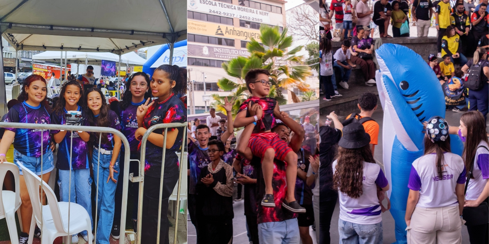
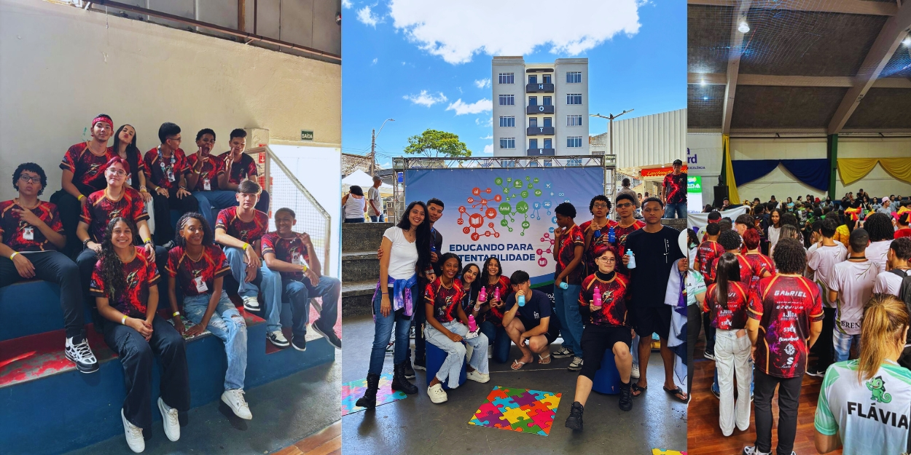
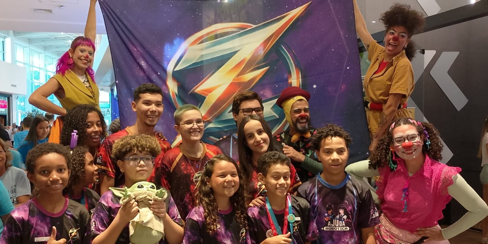
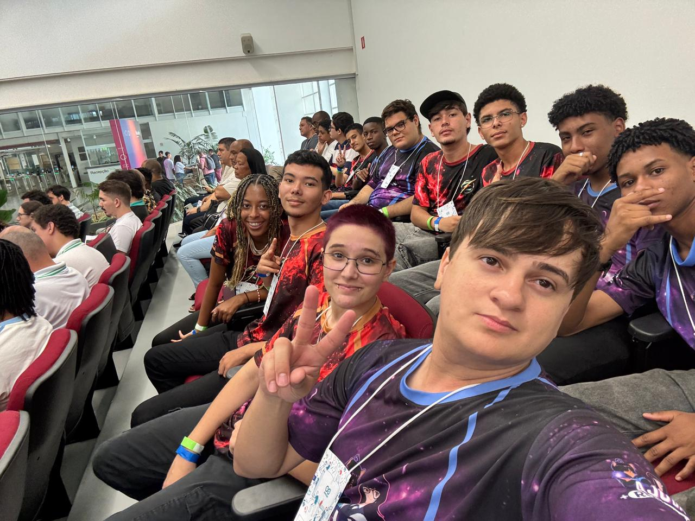
Os momentos marcantes que marcam as nossas trajetoria
Participação na etapa regional do RJ do Torneio Juvenil de Robótica (TJR). A equipe conquistou o 1º lugar na modalidade Dança de Robôs.
Participação no Torneio de Robótica da FAETEC Oficinas Velhas, organizado pela Ajuda Robótica®, em Barra do Piraí/RJ.
Participação no Torneio de Robótica CyberTown, organizado pela Ajuda Robótica® no IpiTown no distrito de Ipiabas em Barra do Piraí/RJ.
Participação na etapa regional do RJ do FIRA, um dos maiores eventos de robótica do Brasil. A equipe conquistou o 1º lugar na modalidade DRC Explorer.
Participação na etapa regional do RJ da FIRST LEGO League Explore, uma competição internacional pioneira em robótica para crianças de 6 a 9 anos.
A equipe foi homenageada e recebeu uma Moção de Aplausos na Câmara Municipal de Barra do Piraí.
Participação no Technovation Girls, programa internacional que incentiva meninas a desenvolverem soluções tecnológicas com impacto social, fortalecendo liderança, criatividade e protagonismo feminino.
Participação na etapa regional do RJ da First LEGO League Challenge, versão para jovens de 9 a 15 anos da competição internacional pioneira em robótica.
Participação no Segundo Torneio de Robótica da FAETEC Oficinas Velhas, evento que fortaleceu a aprendizagem prática, o espírito de equipe e o desenvolvimento tecnológico dos estudantes em Barra do Piraí/RJ.
Segunda participação na etapa regional do RJ da FIRST LEGO League Explore a equipe foi classicada para a etapa nacional.
Participação na Roboventure, competição que reuniu equipes em desafios de robótica, estratégia e resolução de problemas, ampliando a experiência dos alunos em ambiente competitivo.
Participação na Rio Innovation Week, onde a equipe alcançou o pódio na modalidade de combate de robôs, competindo contra equipes universitárias.
Participação no CyberAjuda, evento da Ajuda Robótica® que integra cultura, tecnologia, educação e competições de robótica, promovendo protagonismo juvenil e experiências de aprendizagem em Barra do Piraí/RJ.
Participação na etapa nacional da FIRST LEGO League Explore, representando a equipe em uma experiência de intercâmbio, apresentação de projetos e convivência com equipes de diferentes regiões do país.
Participação no Torneio Brasil de Robótica, vivenciando desafios que integram ciência, tecnologia, criatividade, comunicação e trabalho em equipe.
Participação na Mostra Nacional de Robótica, espaço de apresentação de projetos, pesquisa e inovação que fortalece o portfólio técnico e científico dos estudantes.
Participação no Arduino Day, evento de tecnologia e cultura maker que aproxima os jovens da eletrônica, da programação e da criação de soluções práticas.
Desenvolvemos projetos que conectam criatividade, engenharia, programação e trabalho em equipe, transformando desafios em soluções reais.
Pesquisa científica sobre como as formigas do gênero Atta podem ajudar a mitigar os impactos ambientais causados pela desertificação.
Aplicativo para facilitar a conexão de doadores de sangue com pessoas que precisam de doação.
Robô submarino móvel com câmera e inteligência artificial para monitorar, em tempo real, a saúde dos corais.
Robô aquático móvel autônomo com filtro de carvão ativado para auxiliar na remoção de mercúrio em ambientes aquáticos.
A EZodium é formada por diferentes iniciativas, cada uma com sua própria missão, identidade e contribuição. Juntas, elas compõem uma constelação que conecta inclusão, competição, liderança, formação e protagonismo juvenil.
Quatro iniciativas. Diferentes missões. Uma única direção: formar jovens protagonistas através da robótica, tecnologia, esporte e educação.
Iniciativa de alunos veteranos e mais experientes que participam de competições, ações sociais e auxiliam no treinamento dos membros mais novos.
Iniciativa formada por alunos de escolas públicas, criada para ampliar o acesso à educação tecnológica e abrir caminhos para novos talentos.
Iniciativa que incentiva a participação de meninas nas áreas de Ciência, Tecnologia, Engenharia e Matemática (STEM) através de competições de robótica
Iniciativa que utiliza a modalidade de combate de robôs como campo prático para desenvolver competências técnicas voltada à formação em engenharia mecatrônica
Na EZodium, cada estrela brilha de um jeito, mas todas iluminam a mesma jornada.
Por trás de cada conquista, existe uma rede de instituições que acredita na nossa missão e nos ajuda a transformar sonhos em realidade.
Responsável pela criação, formação, treinamento e desenvolvimento da equipe EZodium. Sua atuação é fortalecida pela frente social e institucional do Instituto Ajuda Robótica, que amplia parcerias, oportunidades e impacto comunitário.
Empresas e instituições que investem diretamente na jornada da EZodium, viabilizando competições, materiais, uniformes, viagens, inscrições e estrutura técnica.
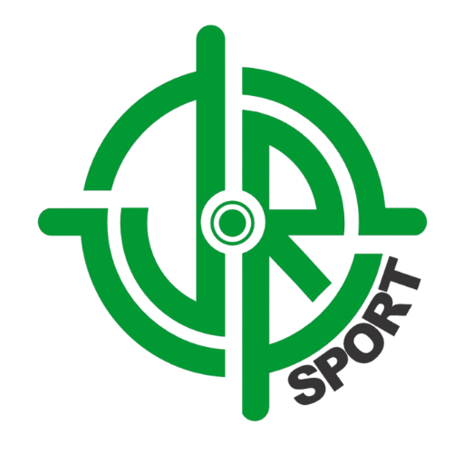
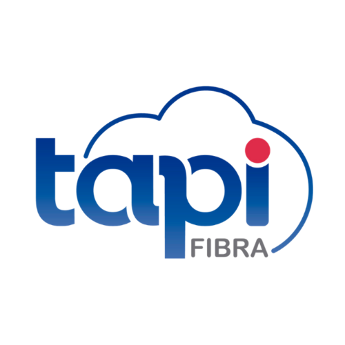
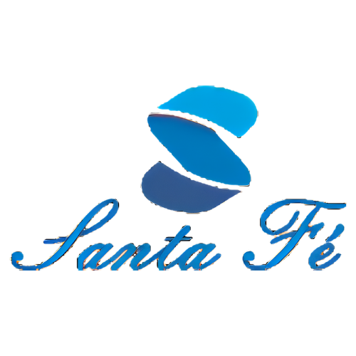
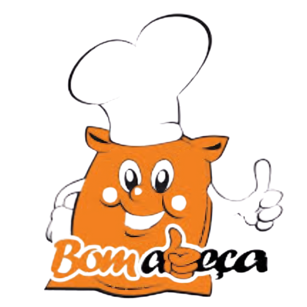
Parceiros que apoiam e caminham junto com a EZodium e fortalecem sua missão.
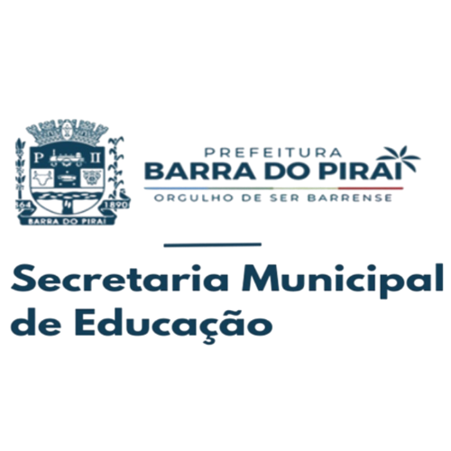
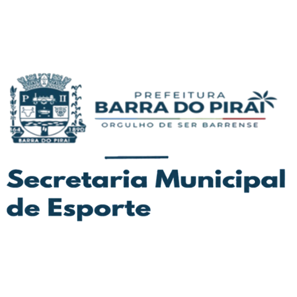
Sua marca, instituição ou iniciativa pode ajudar a EZodium a chegar mais longe.
Ser EZodiano é mais do que participar de uma equipe de robótica. É viver desafios, aprender com os erros, crescer em grupo e descobrir o seu próprio potencial.
Integrante da iniciativa dos alunos mais velhos, veteranos e mentores da equipe.
Integrante da iniciativa de base, inclusão e acesso à robótica para novos talentos.
Integrante da iniciativa focada em combate de robôs, arena, estratégia e performance.
Integrante da iniciativa que fortalece representatividade, liderança e protagonismo feminino.
Um mapa rápido para quem quer entender como apoiar a EZodium, fortalecer jovens talentos e transformar robótica em experiências de vida.
Toque em uma etapa da rota para abrir a dúvida correspondente.
A EZodium é uma equipe de robótica de Barra do Piraí/RJ, formada por jovens estudantes que participam de competições, projetos e experiências ligadas à tecnologia, robótica, educação e esporte.
Apoiar a EZodium é investir na formação de jovens talentos. Cada competição, projeto e treinamento desenvolve habilidades como liderança, criatividade, trabalho em equipe, comunicação, resiliência e pensamento técnico.
Empresas podem apoiar por meio de patrocínio financeiro, fornecimento de materiais, transporte, alimentação, divulgação, mentoria, infraestrutura ou parcerias institucionais.
Não. Toda forma de apoio pode fazer diferença. A equipe também precisa de materiais, equipamentos, serviços, divulgação, contatos estratégicos e oportunidades para os alunos.
Basta clicar no botão de contato da página para falar com a equipe. A EZodium poderá apresentar possibilidades de apoio, contrapartidas e formas de parceria de acordo com o perfil de cada apoiador.